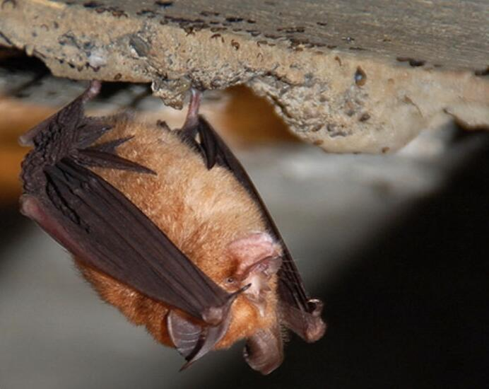
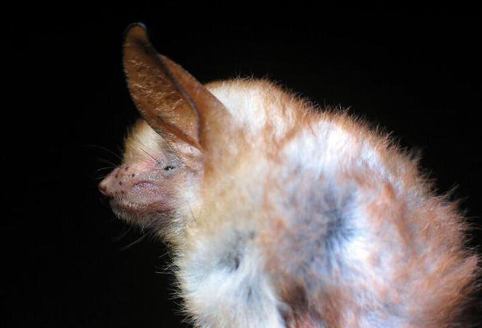
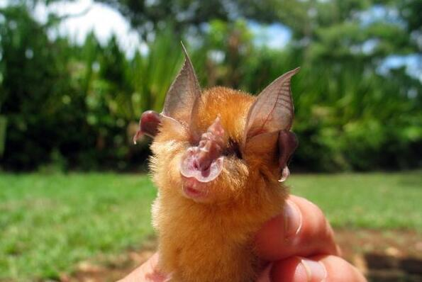
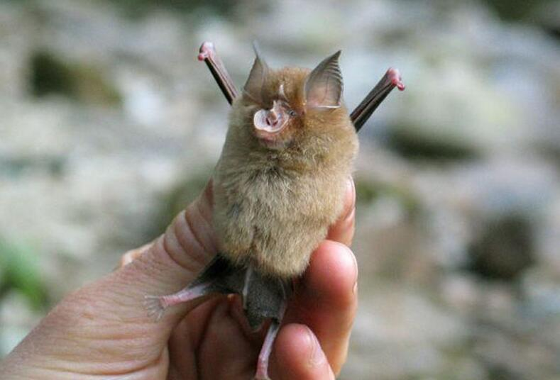

|
拒绝野味，守护家人健康——惹不起的蝙蝠
狐蝠世界上最大的蝙蝠种类体型较一般蝙蝠大，两翼展开长达90厘米以上。由于头型似狐,口吻长而伸出，故称狐蝠，一般体型较大，但有些种类很小， 体长5～40厘米, 最小的体重15克（如食花粉、花蜜者），大者达900克。分布于旧大陆热带、亚热带地区，总数超过160种， 以东南亚和非洲种类 最多。分布于旧大陆热带、亚热带地区，总数超过160种，以东南亚和非洲种类最多。寿命:20年左右.
|  |  |  |  |
菊头蝠共有98个物种。体长4.1-5.3厘米，尾长1.8-2.9厘米，前臂长4.5-5.2厘米，体重914克，颅全长1.9-2.3厘米，耳长1.58-2.1毫米。因有结构比 较复杂的马蹄形鼻叶，故英文名称为“马蹄蝠”。
|
果蝠果蝠（拉丁学名Rouettusleschenaulti ）是狐蝠科果蝠属下的动物，主要分布在热带 和亚热带。中国的种类不多，仅限于华南各省，现被疑为埃博拉病毒宿主 果蝠是最大的蝙蝠，有些种类翼幅长达2米，又名飞狐。其体型较大，第1,2指均有爪。眼大，尾较短，不为皮膜所包被。在黎明和黄昏出外觅食， 果实和花蕊中的汁液，对果树造成一定的危害。
截至2014年12月17日，世界卫生组织（WHO）发表数据显示埃博拉出血热疫情肆虐的利比 里亚、塞拉利昂和几内亚等西非三国的感染病例 (包括疑似病例) 已达19031人，其中死亡人数 达到7373人。世界卫生组织2016年3月17日在日内瓦宣布，2016年1月在塞拉利昂复燃的小规模埃博拉疫情于当 日结束 。2017年5月15日，世卫组织宣布刚果爆发埃博拉疫情，已有3人死亡。2014年和2015，非洲西部三个国家埃博拉疫情肆虐，几内亚、塞拉利昂和利比里 亚有8000人因为感染埃博拉病毒不治身亡。
于2000年在中国广东发生，并扩散至东南亚乃至全球，直至2003年中期疫情才被逐渐消灭 的一次全球性传染病疫潮。截止2003年8月16日， 中国内地累计报告非典型肺炎临床诊断病例5327例，治愈出院4959例，死亡349例(另有19例死于其它疾病，未列入非典病例死亡人数中。 中国香港1755例， 死亡300人；中国台湾:665例，死亡180人；加拿大:251例，死亡41人；新加坡:238例，死亡33人；越南:63例，死亡5人。